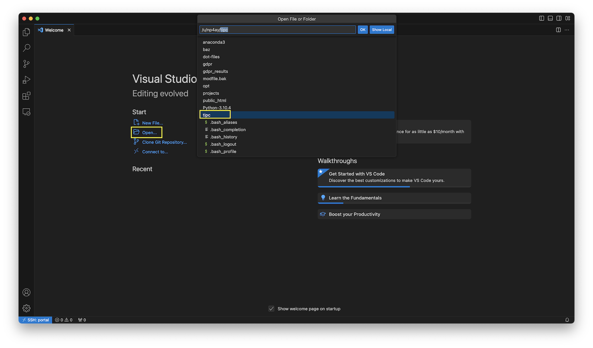
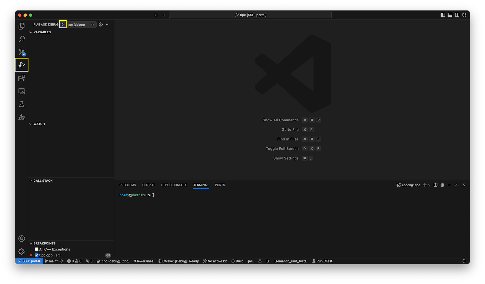
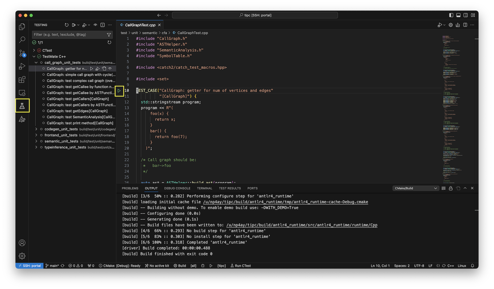

You can develop tipc on servers hosted by the CS department (e.g., portal, granger). The file system shared by these machines includes all of the required dependencies. For a familiar IDE experience, we can leverage VS Code and the Remote - SSH extension. The following instructions describe how to install and configure VS Code for tipc development on UVA hosted hardware.
Configuring SSH
First, let us configure password-less logins to the server. In the following instructions we will use the portal cluster.
We will use ssh keys instead of a username/password combination. Generate an SSH key for portal connections.
When prompted, choose a filename for your keys and leave the passphrase field empty.
Next, copy the public key you just created to the remote server.
When prompted, provide your UVA CS password.
Once complete you should be able to ssh to the portal cluster without a password.
You can simplify the login experience with an ssh config file. In the ~/.ssh directory create a file named config, and add an entry that looks like,
Now, you can login with ssh portal.
Cloning tipc
From portal, clone tipc.
Configuring the Remote environment.
You can configure your environment on portal by loading and unloading modules. The tipc project includes modulefiles to help configure the environment. The modulefiles are in the conf directory.
You can load the tipc module with the following command.
Please note that there is an assumption in the stock modulefile that tipc is cloned to your home directory. If that assumption does not hold true, update the topdir variable in conf/modules/tipc/F24 to the actual location of the tipc repository.
To confirm the module was successfully loaded check the value of the TIPCLANG environment variable.
To load the tipc environment every time you ssh to portal, add the module load command to your bashrc.
Building tipc from the Command Line.
At this point you should be fully equipped to build tipc on portal from the command line.
From the tipc project directory,
Using VS Code and the "Remote - SSH" extension
You may prefer to develop with an IDE. In that case you can use VS Code and the Remote - SSH extension. In this setup your local VS Code acts as a lightweight client to a VS Code server running on the remote machine. You connect the client to the server over SSH.
First, install VS Code on your machine. Open the VS Code application.
From the menu on the left, select the Extensions icon. Search for "ssh" and install Microsoft's "Remote - SSH" extension.

Once installed we can build a connection to portal. Open up the Command Palette with ⇧⌘P and search for "Connect to Host". Select the "Connect to
Host..." option.

You will see a list of remote hosts available to you. These hosts are populated from your SSH config file. As such, you will see portal among the entries in the list. Select portal.

This will open a new window and begin installing a VS Code server on the remote machine. When complete we can open the tipc project we previously cloned. When prompted, select "Yes, I trust the authors".

The tipc project packages up VS Code workspace settings to minimize the configurations you need to get started. Opening tipc for the first time will install the required extensions and begin to configure your project. You may be prompted to specify a CMake kit for your project. We will select "Unspecified" to let CMake perform its own automatic detection.

Building tipc in VS Code
You should now be able to build tipc. From the bottom menu bar select the "Build" button. The build process should complete with exit code 0.

Running tipc in VS Code
There are several ways to run tipc from within VS Code. We describe one below.
Select the Run and Debug icon from the gutter on the left of VS Code. A "RUN AND
DEBUG" menu will appear. In that menu, select the green play button. This will run tipc in debug mode.

You may wish to tweak this- or add another launch configuration. For instance, if you wish to pass an argument to tipc. To do so, select the gear icon. This will open .vscode/launch.json. Here you specify the arguments you wish to provide. The VS Code docs provide more information on the configurations available to you.

Testing tipc in VS Code
The C++ TestMate extension adds support for Catch2 testing in VS Code. After you build the project you can select the testing beaker icon. The tipc unit tests are available to run under the "TestMate C++" section.

Note, you can ignore the CTest section.